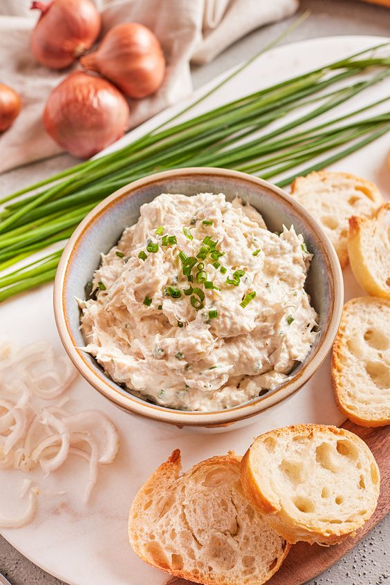

Ingredients
Here are the ingredients to prepare tuna rillettes.
1 can of tuna
100 g of cream cheese
1 tablespoon of lemon juice
1 tablespoon of capers
Pepper
Steps

Steps
Follow these steps to prepare your dish.
Drain the tuna and flake it into a bowl.
Add the cream cheese, lemon juice, capers, and pepper.
Mix until you achieve a smooth consistency. Serve with toast.